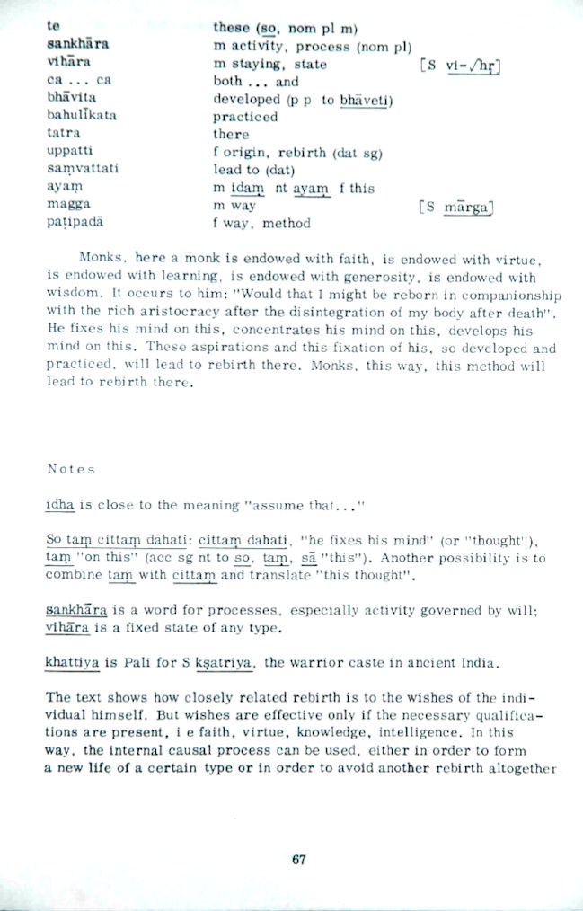
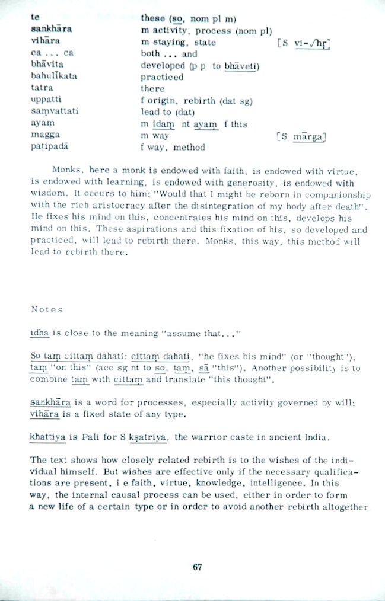

Dependent Origination
Ajahn Brahm
Dependent Origination
Ajahn Brahm
Preface
This revised edition is produced not only in print but also in an electronic format in order that this valuable insight will be more readily available and accessible, reaching a wider audience.
The following acronyms are used in this book. Each one refers to a book in the Pali version of the Sutta Piṭaka (Basket of Discourses) from the Buddhist Canon.
|
DN |
Digha Nikāya |
|
MN |
Majjhima Nikāya |
|
SN |
Saṁyutta Nikāya |
|
AN |
Aṅguttara Nikāya |
This latest online edition includes the suttas referenced with translations by Bhikkhu Sujato. In the addendum you will find a short letter by Ajahn Brahm written in May 1994 (some 8 years before the main text) entitled “Some Remarks on Dependent Origination”.
Wisdom & Wonders book project team
2021
Introduction
The Buddha’s teaching called paṭiccasamuppāda, usually translated as “dependent origination”, is fundamental to the Dhamma (Truth) awakened to by the Buddha on the night of his enlightenment. The Buddha is recorded to have said:
“One who sees dependent origination,
sees the Dhamma.
One who sees the Dhamma,
sees dependent origination.”
MN 28:28.5–28.6, 38.7–38.8
Furthermore, the understanding of dependent origination is an integral part of the delusion-shattering insight that brings one to the state of “one who has entered the stream” (sotāpanna), destined for full enlightenment within a maximum of seven more lives. It is stated by the Buddha that one who has entered the stream may be considered as possessing five attributes:
-
Unshakeable faith in the Buddha, as opposed to other religious leaders.
-
Unshakeable faith in the Dhamma, as opposed to other religious beliefs.
-
Unshakeable faith in the Sangha, the enlightened members of the monastic community.
-
Very high standard of morality, “dear to the enlightened ones”.
-
Accurate understanding of dependent origination, and its corollary idappaccayatā (causality).
AN 10.92:5.1–6.19
Therefore it is fair to say that the correct understanding of dependent origination can only be known by the enlightened ones, that is by the stream-winners, once-returners, non-returners and arahants. This goes a long way to answering the question why there is so much difference of opinion on the meaning of dependent origination.
In this essay I will discuss the meaning of the twelve factors that make up the standard description of dependent origination. Then I will analyse the nature of the causes linking each pair of neighbouring factors, using a Western model of causality. Having explained what the Buddha meant by dependent origination, I will then examine perhaps the most interesting question: Why did the Buddha place such importance on dependent origination? What is its purpose? In this final section, I will propose that the function of dependent origination is threefold:
-
To explain how there can be rebirth without a soul.
-
To answer the question “What is life?”
-
To understand why there is suffering, and where suffering comes to an end.
So let us begin by seeing what the Buddha meant by dependent origination.
1
Dependent Origination—Standard Description
Avijjāpaccayā, bhikkhave, saṅkhārā; saṅkhārapaccayā viññāṇaṁ; viññāṇapaccayā nāmarūpaṁ; nāmarūpapaccayā saḷāyatanaṁ; saḷāyatanapaccayā phasso; phassapaccayā vedanā; vedanāpaccayā taṇhā; taṇhāpaccayā upādānaṁ; upādānapaccayā bhavo; bhavapaccayā jāti; jātipaccayā jarāmaraṇaṁ sokaparidevadukkhadomanassupāyāsā sambhavanti. Evametassa kevalassa dukkhakkhandhassa samudayo hoti.
Avijjāya tveva asesavirāganirodhā saṅkhāranirodho; saṅkhāranirodhā viññāṇanirodho; viññāṇanirodhā nāmarūpanirodho; nāmarūpanirodhā saḷāyatananirodho; saḷāyatananirodhā phassanirodho; phassanirodhā vedanānirodho; vedanānirodhā taṇhānirodho; taṇhānirodhā upādānanirodho; upādānanirodhā bhavanirodho; bhavanirodhā jātinirodho; jātinirodhā jarāmaraṇaṁ sokaparidevadukkhadomanassupāyāsā nirujjhanti. Evametassa kevalassa dukkhakkhandhassa nirodho hotī”ti.
“From delusion as condition, volitional formations (come to be); from volitional formations as condition, consciousness; from consciousness as condition, name-and-form; from name-and-form as condition, the six sense bases; from the six sense bases as condition, contact; from contact as condition, feeling; from feeling as condition craving; from craving as condition, clinging; from clinging as condition, existence; from existence as condition, birth; from birth as condition, ageing-and-death, sorrow, lamentation, pain, displeasure, and despair come to be. Such is the origin of this whole mass of suffering.
But from the remainderless fading away and cessation of delusion comes cessation of volitional formations; from the cessation of volitional formations, cessation of consciousness; from the cessation of consciousness, cessation of name-and-form; from the cessation of name-and-form, cessation of the six sense bases; from the cessation of the six sense bases, cessation of contact; from cessation of contact, cessation of feeling; from the cessation of feeling, cessation of craving; from the cessation of craving, cessation of clinging; from the cessation of clinging, cessation of existence; from the cessation of existence, cessation of birth; from the cessation birth, ageing-and-death, sorrow, lamentation, pain, displeasure, and despair cease. Such is the cessation of this whole mass of suffering.”
SN 12.1
1.1 The meaning of the twelve factors, as defined by the Buddha
It is important for us to understand exactly what the Buddha meant by these twelve terms. Fortunately, when the Buddha taught the Dhamma, he also explained in great detail what he meant by what he said. Admittedly, some terms would be used in slightly different contexts in different suttas. The Nidāna Saṁyutta (SN 12), however, is a collection of suttas that are completely concerned with paṭiccasamuppāda. The second sutta in this collection is called the Vibhaṅga Sutta. Vibhaṅga means the explanation of the terms used. As far as dependent origination is concerned, in this sutta the Buddha gives the clearest explanation of what each of these terms mean.
Using Bhikkhu Bodhi’s translation of the Vibhaṅga Sutta, the meaning of these twelve terms will now be explained. Also, with the aid of some other suttas, the meaning of two of the most controversial terms will be clarified.
First of all, the Buddha said:
“What, bhikkhus, is ageing-and-death? The ageing of the various beings in the various orders of beings, their growing old, brokenness of teeth, greyness of hair, wrinkling of skin, decline of vitality, degeneration of the faculties: this is called ageing. The passing away of the various beings from the various orders of beings, their perishing, their break up, disappearance, mortality, death, completion of time, the break up of the aggregates, the laying down of the carcass: this is called death. Thus this ageing and this death are together called ageing-and-death.”
SN 12.2:3.1–3.7
It is quite clear here that the Buddha was talking about death in the usual meaning of the term, not a death in a moment (which is a term that some people mistakenly use). It means the death that you call an undertaker to settle.
“And what, bhikkhus, is birth? The birth of the various beings into the various orders of beings, their being born, descent (into the womb), production (abhinibbatti = rebirth), the manifestation of the aggregates, the obtaining of the sense bases. This is called birth.”
SN 12.2:4.1–4.3
The meaning of the term “various orders of beings”, is fully brought out by a passage in another sutta specifically dealing with dependent origination, the Mahānidāna Sutta:
“With birth as condition there is ageing-and-death. How that is so, Ānanda, should be understood in this way. If there were absolutely and utterly no birth of any kind anywhere—that is, of gods into the state of gods, of celestials into the state of celestials, of spirits, demons, human beings, quadrupeds, winged creatures, reptiles, each into their own state—if there were no birth of beings, of any sort into any state, then, in the complete absence of birth, with the cessation of birth, would ageing-and-death be discerned?”
“Certainly not, venerable sir.”
DN 15:4.1–4.4
Again, it is quite clear here that birth means what we would normally consider it to be: the arising in the human realm of a being in the womb.
“And what, bhikkhus, is existence (bhava)? There are these three kinds of existence: sense-sphere existence, form-sphere existence, formless-sphere existence. This is called existence.”
SN 12.2:5.1–5.4
Because this term, bhava, is often misunderstood I will explain its meaning in further detail.
The above classification of existence into three realms is sometimes called the tiloka, the three worlds. The kāmaloka are the worlds dominated by the five senses. They are the human realm, the animal realm, the realm of ghosts, the hell realms and the deva realms up to, but not including the brahmaloka. The rūpaloka are the silent worlds wherein one exists in the jhāna attainments. They begin with the brahmaloka and include several other realms based on higher jhānas. The arūpaloka are the worlds of pure mind, wherein one exists in one of the four immaterial attainments. The rūpaloka and arūpaloka are the jhāna experiences attained at the moment of death that continues for vast periods of time, transcending cataclysms of universes and counted in, sometimes, thousands of aeons.
To understand the full meaning of bhava one has to go to the Aṅguttara Nikāya (AN 3.76), where Venerable Ānanda asks the Buddha, “What is bhava?” The Buddha responds by questioning Ānanda: “If there was no kamma ripening in the kāmaloka, would there be existence in the realm dominated by the five senses?” He then asks the same about the other two realms: “If there was no kamma ripening in the rūpaloka, would there be existence in the rūpaloka?” “If there was no kamma ripening in the arūpaloka, would there be existence in the arūpaloka?” Accordingly, Ānanda replies “certainly not” to each question. The Buddha then further explains: “So, Ānanda, you can regard kamma [the actions of body, speech and mind] as the field, you can regard consciousness as the seed, and you can regard craving as the moisture. Thus, for beings who are blinded by ignorance and fettered by craving, there is the establishment of the consciousness in this lower realm [in the hīnadhātu, ie. the realms dominated by the five senses; and so forth for the two higher realms of existence]. Thus there is in the future more existence [punabbhava], rebirth [abhinibbatti]”. Here the Buddha was giving the simile of plants growing, with kamma as the field, and consciousness as the seed, which is fed by the moisture of craving to explain how bhava is a cause for rebirth (jāti).
“And what, bhikkhus, is clinging [sometimes translated as “fuel”]? There are these four kinds of clinging: clinging to sensual pleasures, clinging to (wrong) views, clinging to rules and vows, clinging to a doctrine of self. This is called clinging.
And what, bhikkhus, is craving? There are these six classes of craving: craving for forms [sights], craving for sounds, craving for odours, craving for tastes, craving for tactile objects, craving for mental phenomena. This is called craving.
And what, bhikkhus, is feeling [vedanā]? There are these six classes of feeling: feeling born of eye-contact, feeling born of ear-contact, feeling born of nose-contact, feeling born of tongue-contact, feeling born of body-contact, feeling born of mind-contact. This is called feeling.
And what, bhikkhus, is contact? There are these six classes of contact: eye-contact, ear-contact, nose-contact, tongue-contact, body-contact, mind-contact. This is called contact.
And what, bhikkhus, are the six sense bases? The eye base, the ear base, the nose base, the tongue base, the body base, the mind base. These are called the six sense bases.
And what, bhikkhus, is name-and-form [nāmarūpa]? Feeling, perception, volition [cetanā], contact [phassa], and attention [manasikāra]: this is called name. The four great elements and the form derived from the four great elements: this is called form. Thus this name and this form are together called name-and-form.
And what, bhikkhus, is consciousness? There are these six classes of consciousness: eye-consciousness, ear-consciousness, nose-consciousness, tongue-consciousness, body-consciousness, and mind-consciousness. This is called consciousness.
And what, bhikkhus, are the volitional formations [saṅkhāra]? There are these three kinds of volitional formations: the bodily volitional formation, the verbal volitional formation, the mental volitional formation. These are called the volitional formations.”
SN 12.2:6.1–13.4
The meaning of saṅkhāra is sometimes debated because this is a word that does have many meanings in different places. If one wishes to see the word saṅkhāra used as a cause for rebirth, one can go to the Saṅkhārupapatti Sutta. Saṅkhārupapatti means “rebirth according to saṅkhāra”. Here, the Buddha talks about how certain beings arise in different realms according to their planned actions of body, speech or mind. These are actions of body, speech and mind, which are accompanied by will (cetanā); and it is this kamma which gives rise to future rebirth. This is called saṅkhāra.
In another sutta (SN 12.51:9.1–9.3) the Buddha talks about how, if a person who has ignorance (avijjāgato, “who has gone to ignorance”) plans a meritorious saṅkhāra (puññaṁ saṅkhāraṁ abhisaṅkharoti), his consciousness goes to a meritorious place. If he plans a demeritorious saṅkhāra (apuññaṁ saṅkhāraṁ abhisaṅkharoti), his consciousness goes to an apuñña place, a demeritorious place. If he plans an āneñja saṅkhāra (āneñja being something in-between), then his consciousness goes to that place accordingly. Again, this shows that there are three types of saṅkhāra—meritorious, demeritorious and in-between—and that saṅkhāra is the working of kamma. In much the same way that kamma can be made by body, speech and mind, so too there are three types of saṅkhāra—body, speech and mind saṅkhāra.
“And what, bhikkhus, is ignorance (avijjā)? Not knowing suffering, not knowing the origin of suffering, not knowing the cessation of suffering, not knowing the way leading to the cessation of suffering. This is called ignorance.”
SN 12.2:14.1–14.3
1.2 Causality and the twelve factors
Alongside dependent origination, the Buddha also taught idappaccayatā, causality. The standard formula of causality is as follows:
“When this is, that is.
From the arising of this, that arises.
When this is not, that is not.
From the ceasing of this, that ceases.”
Iti imasmiṁ sati idaṁ hoti,
imassuppādā idaṁ uppajjati.
Imasmiṁ asati idaṁ na hoti,
imassa nirodhā idaṁ nirujjhati.
SN 12.21:1.8–1.9
The first feature of such causality that must be emphasized is that there can be a substantial time interval between a cause and its effect. It is a mistake to assume that the effect follows one moment after its cause, or that it appears simultaneously with its cause. In Buddhist causality, the cause and its effect can be separated by any length of time.
The above two Pali phrases imasmiṁ sati idaṁ hoti and imasmiṁ asati idaṁ na hoti are grammatical constructions called in Pali “locative absolutes”. In Professor A.K. Warder’s Introduction to Pali, the author states categorically that, in such a grammatical construction, the subordinate action (the cause) can precede or be simultaneous with the main action (the effect). As far as the Pali is concerned, the grammar allows the cause to precede the effect by any length of time interval.
For example, in the Nidāna Saṁyutta the Buddha states:
“When birth is,
death is.
From the arising of birth,
death arises.”
SN 12.10:2.4
It has been shown already that in the Nidāna Saṁyutta (SN 12) “birth” and “death” are to be understood in their common meanings. It is clear that birth and death do not happen simultaneously. Nor does birth precede death by just one moment. Birth can sometimes precede death by many years—80, 90, 100, even 120 years.
I have emphasized this point because of the misunderstandings about dependent origination presented by some modern authors on the subject. The fact remains that there can be a substantial time interval between a cause and its effect.
2
On the Meaning of Sandiṭṭhika and Akālika
Some modern writers have suggested that the effect must arise simultaneously with its cause, or arise just one moment after, for this to qualify as a Dhamma which can be “seen here and now” and be “immediate”. They argue that since the Dhamma is sandiṭṭhika and akālika, and dependent origination is one of the central features of the Dhamma, therefore dependent origination must be sandiṭṭhika and akālika. But does sandiṭṭhika mean “seen here and now”? Does akālika mean “immediate”? As I will now show, these translations can be misleading.
The passage in the suttas which gives the clearest indication of the meaning of sandiṭṭhika is in the Mahādukkhakkhandha Sutta (MN 13:8.1–14.5). In this sutta, the dangers of sensual pleasures are described by seven examples of consequences to be experienced in this life, and all seven are described as sandiṭṭhika. This is in contrast to the consequence of sensual pleasures described in the sutta’s next paragraph that are to be experienced after death and are called samparāyika. Clearly, sandiṭṭhika and samparāyika are antonyms (words with opposite meanings). In this context, sandiṭṭhika must mean “visible in this life”. Although some Pali words carry slightly different meanings in different contexts, this is rare and it seems reasonable to assume that sandiṭṭhika means “visible in this life” in all other contexts as well.
Sandiṭṭhika and kālika (the opposite of akālika) are used together in a revealing phrase which occurs three times in the suttas. (SN 1.20:4.4, 5.2, SN 4.21:1.7, 1.9, and MN 70:4.10, 6.15) The phrase, with minor variations in each sutta is as follows:
“I don’t run after what is kālika,
having abandoned what is sandiṭṭhika.
I run after what is sandiṭṭhika,
having abandoned what is kālika.”
N’ahaṁ sandiṭṭhikaṁ hitvā,
kālikaṁ anudhāvāmi.
Kālikaṁ hitvā,
sandiṭṭhikaṁ anudhāvāmi.
In these three contexts, sandiṭṭhika and kālika are clearly direct opposites, antonyms again. Thus it is reasonable to assume that the opposite of kālika, akālika, must be synonymous with sandiṭṭhika. That is, sandiṭṭhika and akālika have essentially the same meaning. They both refer to that which is “visible in this life”.
For example, the Buddha encouraged such practices as maraṇassati, the meditation on death, and many monks, nuns and lay Buddhists practise this method of meditation with liberating results. Maraṇassati is certainly a part of the Dhamma that is sandiṭṭhika and akālika. So, if these two Pali words really did mean “here and now” and “immediate”, maraṇassati would be next to impossible—one would need to be dead to be able to contemplate death in the “here and now”, “immediately”! Obviously, sandiṭṭhika and akālika do not have such a meaning. They both refer to something visible in this life, as opposed to what may only be known after one has died.
It is because each one of the twelve factors of dependent origination can be seen in this life, and their causal relationship can also be seen in this life, that dependent origination spanning more than one life qualifies as a Dhamma that is sandiṭṭhika and akālika.
You may not be able to directly see your own death, but you can see death occurring every day in the hospitals, on the television or in the newspapers. You don’t have to wait until some afterlife to understand the truth of death. You have also seen birth, maybe not your own, but that of many others. You can verify the truth of birth in this very life. Then by seeing human beings in their various stages from birth to death, you can verify in this life that birth is the cause of death. This is why the part of dependent origination “with birth as a condition, ageing-and-death” is a Dhamma that is sandiṭṭhika and akālika, “to be seen in this life”.
You cannot see all the twelve factors in this moment, because they do not occur all in one moment. But you can see a manifestation of each factor in this very life. That, also is why dependent origination is sandiṭṭhika and akālika.
You can also see in this life the causality that links each pair of neighbouring factors. Through the development of penetrating insight empowered by tranquil meditation, you can see in this life how feeling (vedanā) gives rise to craving (taṇhā). You can similarly witness how craving gives rise to clinging/fuel (upādāna). And you can likewise understand in this life how craving and clinging/fuel produces existence (bhava) and birth (jāti) in the next life.
The way that one sees such causality stretching beyond death may be explained by paraphrasing the Buddha’s simile in the Mahāsīhanāda Sutta (MN 12:37.1–37.11). One can know from data seen in this life that a person’s conduct will lead them to an unpleasant rebirth in just the same way that one can know that a person walking along a path with no fork must fall into a pit of coals further along that path. Thus, even the causality that links connected factors on either side of death also qualifies as a Dhamma which is sandiṭṭhika and akālika, to be seen in this life.
I have discussed this issue at length here only because the misunderstandings over the meaning of sandiṭṭhika and akālika have resulted in a misconceived rejection of the Buddha’s clear intention to let his dependent origination span more than one life.
3
Causality and the Necessary and Sufficient Conditions
I have already introduced the Buddha’s formula for causality, idappaccayatā, earlier on in this essay. Here I will show how idappaccayatā relates to what in Western logic we call a “necessary condition” and a “sufficient condition”. This modern analysis of causes throws much light on idappaccayatā and dependent origination.
A necessary condition is a cause without which there would be no effect. For example, fuel is a necessary condition for a fire. Without fuel there can be no fire. The necessary condition is expressed by the second half of idappaccayatā:
“When this is not,
that is not.
From the ceasing of this,
that ceases.”
SN 12.21:1.9
A sufficient condition is a cause that must always produce the effect. For example, a fire is a sufficient condition for heat. A fire must cause heat. The sufficient condition is expressed by the first half of idappaccayatā:
“When this is,
that is.
From the arising of this,
that arises.”
SN 12.21:1.8
In order to demonstrate the difference between these two types of causes I will use the example just given. Fuel is a necessary condition for fire, because with the ceasing of fuel, the fire ceases. But fuel is not a sufficient condition for fire, because fuel doesn’t always produce fire—some fuel remains unlit. Fire is a sufficient condition for heat, because fire must cause heat. But fire is not a necessary condition for heat, because without fire there can still be heat—heat can be generated from other sources.
So a necessary condition is a cause without which there would be no effect, and it is expressed by the second half of idappaccayatā. A sufficient condition is a cause that must produce the effect, and it is expressed by the first half of idappaccayatā. Together they make up Buddhist causality.
The “forward” order of paṭiccasamuppāda, when analysed, shows that only some of the first eleven factors are a sufficient condition for the factor following. Those factors linked by a sufficient condition, meaning that the following factor must come about sooner or later as a consequence of the preceding factor, are as follows:
-
avijjā—saṅkhāra
-
viññāṇa—nāmarūpa
-
nāmarūpa—saḷāyatana
-
saḷāyatana—phassa
-
phassa—vedanā
-
taṇhā—upādāna
-
bhava—jāti
-
jāti—dukkha
Thus, when there is avijjā, there will inevitably occur some kamma formations inclining to rebirth. When there is viññāṇa, there must be nāmarūpa, saḷāyatana, phassa and vedanā. When there is taṇhā, there will be upādāna. Also, bhava is sufficient to produce birth (see AN 3.76). Then, most importantly, jāti must produce dukkha. Having been born one must suffer dukkha. Therefore, the only escape from suffering is to cease being reborn. As Venerable Sāriputta said:
“In brief, to be reborn is dukkha, not to be reborn is sukha (happiness).”
AN 10.65:2.2
It is of interest now to look at the links that are not sufficient conditions.
Saṅkhāra is not a sufficient condition for rebirth-linking consciousness and the stream of consciousness that follows. This is because, having produced many rebirth-inclining kamma formations early on in one’s life, it is possible to make them all null and void (called ahosi kamma) with the attainment of arahantship, which attainment eliminates the stream of consciousness that would otherwise begin at rebirth.
The fact that upādāna is not a sufficient condition for bhava is similar to saṅkhāra not being a sufficient condition for viññāṇa. Through the development of the noble eightfold path as far as full enlightenment, no new upādāna is generated and all previous upādāna becomes ineffective in producing a ground for a new existence or bhava. The upādāna previous to full enlightenment becomes, as it were, ahosi upādāna.
Even more obvious, vedanā is not a sufficient condition for taṇhā. Vedanā are certainly experienced by arahants, but they never generate taṇhā. Moreover, for ordinary people, not every vedanā produces craving.
Some Western Buddhists have proposed that the “forward” order of paṭiccasamuppāda can be halted by “cutting” the process between vedanā and taṇhā. Often I have heard some suggest that rebirth can be avoided through using sati (mindfulness) on vedanā to stop it generating taṇhā and the following factors of paṭiccasamuppāda. This is, in my understanding, misconceived on two grounds.
First, the “forward” order of paṭiccasamuppāda was never intended to demonstrate how the process should be “cut”. The “forward” order is only meant to show how the process continues. The teaching on how the process is “cut”, or rather ceases, is the purpose reserved for the “reverse” order of paṭiccasamuppāda or “dependent cessation”.
Secondly, even though vedanā does not inevitably produce taṇhā, because it is not a sufficient condition, it is well stated by the Buddha that only when avijjā ceases once and for all does vedanā never generate taṇhā! This means that one doesn’t “cut” the process using sati on vedanā. Sati is not enough. The process stops from the cessation of avijjā, as dependent cessation makes abundantly clear. The cessation of avijjā is much more than the practice of sati.
4
Misreading the Suttas
There is a sutta in the Aṅguttara Nikāya that is often presented as evidence that dependent origination does not span more than one life. This sutta is called “Tenets” in the Pali Text Society’s translation (AN 3.61). Some interpret this sutta as stating that vedanā is not caused by kamma formations (saṅkhāra) done in a past life. Therefore the link called saṅkhāra in dependent origination (which does cause vedanā) cannot mean kamma formations of a previous life. I will show below that this conclusion is wrong, as it comes from a misreading of the suttas.
The relevant part of this sutta presents three theories to explain why one feels pleasant, unpleasant or neutral vedanā. The first theory states that everything one feels is due to what one did in the past (sabbaṁ taṁ pubbe katahetu). The other two theories state that everything one feels is either caused by God or by chance. The Buddha categorically states in this sutta that all three theories are wrong.
The first theory, the one pertinent to this discussion, that everything that one feels now is due to what one did in the past, is repeated in the Devadaha Sutta (MN 101:2.4–2.8) where it is said to be a belief of the Jains. The Jains held that all the suffering one experienced in this life was due to bad kamma from a previous life. Indeed, this sutta clarifies this first theory as meaning everything that one feels now is due to what one did in a past life. The Devadaha Sutta disproves this theory.
So it is true that the Buddha denied that everything that one feels, happiness or suffering or neutral feeling, is due to what one did in a past life (i.e. due to kamma formations of a past life). This should be obvious. Some of what one feels is caused by kamma formations from a past life, some caused by past kamma formations earlier in this life, and some caused by kamma formations being performed now. What the Buddha was denying was that all happiness or suffering or neutral feelings are caused by kamma from a previous life.
It should be pointed out that the Buddha is here referring to the type of feeling, rather than to feeling itself. It is true that whichever one of the three types of feeling that one experiences, happiness or suffering or neutral, is not always due to kamma from a past life. But it is also true that the situation whereby one can experience feeling at all, the fact that vedanā exists, is due to kamma from a past life.
A simile might make this clearer. The situation that you possess a TV on a public holiday is due to you having purchased it on some previous day. Its presence, as it were, is due to kamma from a past day. But whichever one of the three available channels that appears on the screen, Channel Happiness or Channel Suffering or Channel Neutral, is not always due to what you did on some previous day. The content is not all due to kamma from the past.
In the same way, the Buddha states that the existence of vedanā in this life is due to kamma formations done in the previous life. But the particular type of feeling, happiness or suffering or neutral, is not always due to kamma from a previous life.
Once the distinction is made between vedanā and the contents of vedanā (happiness or suffering or neutral), it is clear that the Tenets Sutta doesn’t state that vedanā is not caused by kamma formations from a previous life. It does not disprove the orthodox understanding of dependent origination as spanning three lives.
Indeed, the latter part of the Tenets Sutta introduces dependent origination from a unique starting point:
“Depending on the six elements (earth, air, fire, water, space and consciousness) there is the descent of the being to be born into the womb; when there is descent, there is name-and-form; with name-and-form as condition, the six sense bases; with the six sense bases as condition, contact; with contact as condition, feeling.”
Channaṁ, bhikkhave, dhātūnaṁ upādāya gabbhass’āvakkanti hoti; okkantiyā sati nāmarūpaṁ, nāmarūpapaccayā saḷāyatanaṁ, saḷāyatanapaccayā phasso, phassa-paccayā vedanā.
AN 3.61:13.4–13.5
Thus the Buddha is clearly showing the origin of vedanā as due to the descent of the being to be born into the womb. This can now be compared to the Mahānidāna Sutta and its definition of nāmarūpa:
“It was said ‘with consciousness as condition there is name-and-form’. How this is so, Ānanda, should be understood in this way. If consciousness were not to descend into the mother’s womb, would name-and-form take shape in the womb?”
“No, venerable sir.”
‘Viññāṇapaccayā nāmarūpan’ti iti kho pan’etaṁ vuttaṁ, tadānanda, imināpetaṁ pariyāyena veditabbaṁ, yathā viññāṇapaccayā nāmarūpaṁ. Viññāṇañca hi, ānanda, mātukucchismiṁ na okkamissatha, api nu kho nāmarūpaṁ mātukucchismiṁ samuccissathā”ti?
“No hetaṁ, bhante”.
DN 15:21.1–21.3
This clearly equates the descent of the being to be born into the womb of the Tenets Sutta with the descent of (rebirth linking) consciousness into the womb of the Mahānidāna Sutta. Thus vedanā is said in the Tenets Sutta to be caused by the first consciousness arising in this life, whose own cause can only be found in a previous life.
Thus the sutta in the Aṅguttara Nikāya which is often presented as evidence that dependent origination does not span more than one life, when read accurately and completely, actually clearly proves the opposite. The situation that vedanā exists at all is due to avijjā and kamma formations from the previous life, and dependent origination, as taught by the Buddha, does indeed span more than a single life.
5
The Purpose of Dependent Origination
So far, I have described what dependent origination means. I have shown, by quoting from the original texts, that the factor viññāṇa refers to the stream of consciousness beginning in a life after the avijjā and kamma formations that caused the rebirth. I have shown how causality, the link between one factor and the next can involve a substantial interval of time, even extending beyond this life into a future life. In summary, I have shown that paṭiccasamuppāda, as taught by the Buddha in the suttas, can only mean a process that spans three lives. To believe that paṭicca samuppāda must be restricted to a single life, or even to a few moments, is simply untenable in light of reason and facts.
It is now time to consider the purpose of dependent origination. One can gain understanding of a thing, not only by finding out what it is made of, but also by investigating what it does. Now I am going to discuss the function of paṭiccasamuppāda. I will discuss three purposes of paṭiccasamuppāda:
-
To explain how there can be rebirth without a soul.
-
To answer the question “What is life?”
-
To understand why there is suffering, and where suffering comes to an end.
5.1. Rebirth without a soul
One of the most common questions that I am asked is how can there be rebirth when there is no soul to be reborn. The answer to that question is dependent origination. Paṭiccasamuppāda shows the empty process—empty of a soul, that is—which flows within a life and overflows into another life. It also shows the forces at work in the process, which drive it this way and that, even exercising sway in a subsequent life. Dependent origination also reveals the answer to how kamma done in a previous life can affect a person in this life.
Dependent origination presents two sequences that generate rebirth:
-
Delusion (avijjā) + kamma → the stream of consciousness beginning at rebirth (viññāṇa).
-
Craving (taṇhā) + fuel (upādāna) → existence (bhava) + rebirth into that existence (jāti).
These are parallel processes. They describe the same operation viewed from two different angles. I will now combine them:
Deluded kamma and craving produce the fuel which generates existence and rebirth (into that existence), thereby giving rise to the start of the stream of consciousness that is at the heart of the new life.
It is kamma and craving, both under the sway of delusion, that is the force propelling the stream of consciousness into a new life.
I will now offer some similes to illustrate this operation. These similes are only approximations and, therefore, will never perfectly match paṭiccasamuppāda. This is because dependent origination is mainly a process describing the flow of the mental consciousness, whilst the similes at my disposal are from the more well known material world. Still, they should help to clarify one’s understanding.
Someone goes to an airport to fly to another country. If they have enough money for the fare and they have a desire to go to a new country, then they may arrive in that land. If they have the fare but not the desire, or the desire but not the fare, or they lack both, then they will not arrive in the new country.
In this simile the person stands for the stream of consciousness; the airport stands for death; the new country stands for the next life; the fare stands for the person’s accumulated kamma; and their desire to go there stands for craving. With much good kamma and a craving for happiness, or just the craving to be, the stream of consciousness that one thinks of as “me” is propelled into one’s chosen next life. With much bad kamma and a craving for happiness, one cannot reach the happiness one wants, and thus one is propelled into an unsatisfactory next life. With much bad kamma and a craving for punishment, what we recognize in this life as the guilt complex, one falls into a next life of suffering. Then with much good kamma and no craving at all, one goes nowhere. Like the traveller at the airport, they have enough money to go wherever they want first-class, but the delusion has been shattered and the desire that generated all this coming-and-going is no more. They cease at the airport.
How does one seed produce a new seed? Suppose a seed is planted in a good field, it is fed by moisture carrying essential nutrients, and it grows to maturity producing another seed at its death. There is no soul or self in the seed, yet one seed has evolved into another seed following a process of cause and effect. The original seed and the new seed are completely different. Almost certainly, there isn’t even one molecule of the original seed to be found in the new seed. Even the DNA, though similar, is not the same. It is an example of a well-known process which spans a life, but with nothing that one can identify as an essence passing unaltered from the original seed to the new seed. Rebirth, as it were, has happened with no “seed-soul” going across. I mention this example because it is similar to a metaphor of the Buddha:
“Kamma is like the field, craving like the moisture, and the stream of consciousness like the seed. When beings are blinded by delusion and fettered with craving, the stream of consciousness becomes established, and rebirth of a new seed [consciousness] takes place in the future.”
Paraphrased from AN 3.76
It is interesting to describe how a recent, real instance of kamma and craving worked together to change bhava, the kind of one’s existence. In the late 1970’s in Britain, many uneconomical coal mines were permanently closed. One particular disused mine was close to a heavily populated area in South Wales. When some of the poor of that area had unwanted kittens, they would cheaply dispose of them by cruelly throwing them down into the abandoned mineshaft. Several years later, some engineers entered that mine to check on its safety. They found a remarkable discovery. Some of the kittens had survived the fall and, in the space of only a few generations, had evolved into a completely new species of cat, blind in their eyes but with enormous ears. Craving and behavioural conditioning (kamma) had been the obvious driving forces that produced the mutation.
The above examples only begin to give an indication of the process that is paṭiccasamuppāda.
Dependent origination, after all, is mainly a process that describes the flow of mental consciousness, and this is fundamentally different from material processes. If one can imagine a beach of white sand, then the stretch looks continuous. On closer examination, though, one finds that the beach is made up of an uncountable number of small grains, each close to the next. If one looks even closer, one discovers that the grains aren’t even touching, that each grain is alone. Similarly, when one’s mindfulness has been empowered by jhāna meditation, one may see the stream of consciousness in much the same way. Before, it looked like a continuous stretch of unbroken cognition. But now it is revealed as granular, tiny moments of consciousness, uncountable in number, close together but not touching, and each one alone. Having seen the true nature of consciousness, only then can one see how one moment of consciousness influences what follows. Kamma, like a discrete particle of behavioural conditioning, together with craving combine to make the impersonal forces that steer the journey of consciousness, like an aircraft on an automatic super-pilot. Furthermore, when the insight comes, based uniquely on the data of jhāna, that the mental consciousness is independent of the body and must clearly survive the death of the body, then one sees with absolute certainty that the forces of kamma and craving that drive mental consciousness now, will continue to drive the mind through and beyond death. Rebirth and its process are seen. Paṭiccasamuppāda is understood.
The Buddha said to Venerable Ānanda at the opening of the Mahānidāna Sutta (DN 15):
“This dependent origination, Ānanda, is deep and it appears deep.”
DN 15:1.3–1.8
In my opinion, one needs the experience of jhāna to see it clearly. Nevertheless, I hope that the explanation and similes that I have given will help throw some light onto the true nature and purpose of this impersonal process that drives the mind from life to life. At least you can know that when paṭiccasamuppāda is fully understood, it is also clearly seen how rebirth happens without any soul.
5.2. What is life?
One of the major difficulties that Buddhists find with the teaching of anattā is that if there is no soul or self, then what is this? What is it that thinks, wills, feels or knows? What is it that is reading this? In summary, what is life?
In one of the most profound of all suttas in the Buddhist scriptures, the Kaccānagotta Sutta (SN 12.15), which was to play a major role in later Buddhist history, the Buddha stated that, for the most part, people’s views on the nature of life fall into one of two extremes. Either they maintain that there is a soul, or they hold that there is nothing at all. Unfortunately, too many Buddhists confuse the teaching of anattā and side with the view that there is nothing at all.
The Buddha condemned both extremes with a devastating argument based on experience. It is untenable to maintain that there is a soul because anything that can be meaningfully considered as a soul or self—the body, will, love, consciousness or mind—can all be seen as impermanent. As the Buddha put it “One cannot say that there is (a soul), because a cessation (of all that can be a soul) is seen”. On the other hand, it is untenable to maintain that there is nothing at all, because it is obvious that life is! As the Buddha put it “One cannot say that there is nothing, because an arising (of all phenomena) is seen”. Thus, as the Buddhist philosopher-monk Nāgārjuna (2nd century CE) was to remind everyone, the Buddha clearly denied the doctrine of absolute emptiness.
Even today, most people fall into one of these two extremes. Either that there is nothing at all and the mind, love, life is complete illusion, or that there is an eternal soul with God as the corollary. Both are wrong.
The Kaccānagotta Sutta continues with the Buddha pointing out that there is a middle that has been excluded in this dichotomy of views. There is a third option that avoids both extremes. So what is this “middle” between the extremes of a soul and nothingness? That middle, said the Buddha, is paṭiccasamuppāda.
When the Buddha stated that it is untenable to hold that there is a soul or self (or a God) because a cessation is seen, he explained what he meant as:
“From the cessation of delusion, kamma formations cease; from the cessation of kamma formations consciousness ceases … from the cessation of birth, dukkha ceases.”
SN 12.15:3.7–3.9
He was referring to the passing away process called dependent cessation. This impersonal process is the very thing that we identify as life. Moreover, it includes all the “usual suspects” that masquerade as a soul: the body (part of nāmarūpa), will (part of the kamma formations, sometimes taṇhā), love (part of the kamma formations and mostly part of upādāna, clinging), consciousness (viññāṇa) and mind (part of saḷāyatana and often equivalent to viññāṇa). These usual suspects are clearly seen in the light of dependent cessation as transient, insubstantial, granular and fading away soon after they arise. They are all conditioned. They exist only as long as they are supported by their external causes, which are themselves unstable. When the external supporting causes disappear, so do each of the usual suspects. Because these things do not persist, since they do not continue in being, it is untenable to hold that there is a soul, a self or a God.
When the Buddha stated that it is also untenable to maintain that all is pure emptiness, void, nothing, because an arising is seen, he explained what he meant as:
“From the arising of delusion, kamma formations arise, from kamma formations arises the stream of consciousness in the next life … from birth arises dukkha!”
SN 12.15:3.4–3.6
He was referring to the arising process called dependent origination. Again, this impersonal process includes all that we can know as “life”. Because this arising is seen, one cannot say they are not. It is not an illusion. These phenomena are real.
A simile might help here. In mathematics a point is a concept drawn from the science of life. It describes aspects of real phenomena. Yet a point has no size. It is smaller than any measure that you can suggest, yet it is bigger than nothing. In a sense, one cannot say a point is, because it does not persist, it does not continue in space. Yet one cannot say it is not, as it is clearly different from nothing. The point is similar to the momentary nature of conscious experience. Nothing continues in being therefore it cannot be something. Something arises therefore it cannot be nothing. The solution to this paradox, the excluded middle, is the impersonal process.
In Advaita Vedanta, one common method is to pursue the enquiry “Who am I?” That is a loaded question. It carries an implicit premise that has yet to be agreed on. The question “Who am I?” assumes that “I am”, only one doesn’t know what. In the Sabbāsava Sutta (MN 2:7.2–7.6) the Buddha called such enquiries “attending unwisely” (ayoniso manasikāra), and in the Mahātaṇhāsankhaya Sutta (MN 38:24.1–24.2) the Buddha described this as remaining “inwardly perplexed” (kathaṁkathā). In other words, it doesn’t lead to anything penetrating. This enquiry of Advaita Vedanta is said to end with an experience of ultimate reality described as “You are that”, or tat tvam asi in Sanskrit. But such an end-doctrine is plainly begging the question. What is this “That” that you are? The Buddha never circled around the issue in such a fruitless way. For The Buddha would say:
Paṭiccasamuppādo tvaṁ asi.
“You are dependent origination.”
What was once assumed to be “me”, a self or a soul, or assumed to be an illusion or complete emptiness, is now clearly seen as the impersonal process of dependent origination, a causal sequence rolling on from life to life, containing all and anything that can meaningfully be a soul, the “usual suspects” as I call them, but nothing continuing in being.
So, if you wanted to find out who you are, now you have the answer: dependent origination! And if you wanted to find out what is life, now you also have the answer: dependent origination!
Paṭiccasamuppāda—that’s life!
5.3. Why suffering?
The main purpose of paṭiccasamuppāda is to establish the reason why we suffer, and to find a way of eliminating suffering once and for all. To understand this point, we must now take a look at the Buddha’s discovery of dependent origination in the context of the story of the Buddha’s life.
The Bodhisatta (an unenlightened being soon to become Enlightened) sat under the Bodhi Tree on the night of his enlightenment for the sole purpose of finding a solution to suffering. As a young man, he had been deeply moved by the tragic sights of an old man, a sick man, and a dead man. Realizing that the suffering of old age, sickness and death was the certain destiny of himself as well, he left home in order to find a way out of all suffering. Under the Bodhi Tree, the Bodhisatta entered the jhānas for the first time since he was a small boy. Having thus empowered his mind, he then pursued a method of enquiry called yoniso manasikāra, which literally means “work of the mind which goes back to the source”. The problem was suffering, in particular the seemingly inescapable suffering associated with old age, sickness and death. Tracing the problem back to the source, the source was seen as birth.
Jāti-paccayā dukkha,
“Suffering is caused by birth.”
As shown above, birth is a sufficient cause for suffering, that is, birth must give rise to dukkha. Every being that is born will get old, get sick and die, and experience the inescapable dukkha associated with that process. Thus birth is the problem.
This first link of paṭiccasamuppāda is rarely given the attention it deserves. It has enormous implications. Before the great insight into dependent origination under the Bodhi Tree, the Bodhisatta, like most people, had lived in hope that somehow he could attain perfect happiness in this existence or some future existence. Now he saw that all existence (bhava) is inextricably involved with suffering. There is no perfect happiness to be found in any form of existence. As the Buddha said in the Aṅguttara Nikāya:
“Just as a tiny bit of faeces has a bad smell, so I do not recommend even a tiny bit of existence, not even for so long as a finger-snap.”
AN 1.328
A simile might help. A person born in a harsh prison, raised in that prison, who has spent all their time in the prison, can only know prison life. They don’t even suspect that anything beyond their prison can exist. So they make the best of prison. Those who think positively, because they have gone to prison seminars, begin to think that the harsh prison is instead a wonderful place. They even compose songs like “All jails bright and beautiful … the good Lord made them all!” Others get involved with social service, compassionately decorating the prison cells of others. When someone gets tortured or otherwise punished in jail, they think something has gone wrong and look for someone to blame. If someone suggests that it is the very nature of jail to be suffering, then they are dismissed as a pessimist and told to “Get a life!” One full moon night, a prisoner discovers a door leading out of the jail and goes through. Only then does he realize that jail was inherently suffering and you can’t make it otherwise. He goes back to tell his fellow prisoners. Most don’t believe him. They can’t even imagine anything other than their jail. When he says that the jail is suffering and the cessation of imprisonment is happiness, he is accused by one and all of escapism.
Sometimes people rebuke me, saying, “You monks are just trying to escape from the real world!” I reply “Well done! At last someone else has understood Buddhism!” What’s wrong with escapism, especially when one realises that the real world is the harsh prison.
The enlightenment experience of the Buddha began with the experience of jhānas. These “stages of letting go” are also stages of increasing bliss. After jhāna, one can reflect on the reason why these jhānas are by far the most pure and powerful happiness of one’s life. What is the cause of such happiness? Ajahn Chah used to say that it is like having had a tight rope around one’s neck for as long as one can remember. Then one day the rope is suddenly released. The bliss and ease that is felt is because a huge burden of suffering has gone. The ecstasy of jhāna is because one has escaped, albeit temporarily, from what people mean by “the real world”. When the Buddha reflected on jhāna, he realized that the real world is suffering, it is a jail, and release from it is bliss. He could only know this once he had stepped out beyond jail. That is one of the purposes of jhāna. Jhāna is also called vimokkha, which means “release”.
Even arahants, enlightened monks and nuns, experience suffering. They are not released from suffering, they are still in the world, in jail. The main difference between an ordinary “prisoner” and an arahant is that the latter is certain to leave soon. Using the simile from the Theragātha (Thag 17.2:23.1–23.4), an arahant is like a workman having completed the job and now calmly waiting for his wages. In the sutta called “The Dart” suffering is compared to being stabbed with two darts. An arahant is only stabbed with one dart. The two “darts” refer to bodily suffering and mental suffering. The arahant, alone of this world, only experiences bodily suffering. But it is still enough to say that an arahant in this life still experiences suffering. As the enlightened nun Vajirā explained (SN 5.10:6.1–6.4), what it feels like to be an arahant is just experiencing suffering arising and suffering passing away, and this was confirmed by the Buddha in the Kaccānagotta Sutta (SN 12.15:2.6), already mentioned above. Arahants experience suffering because all existence (bhava) or birth (jāti) is suffering. Only when they pass away, or parinibbāna, when existence ceases, does suffering end once and for all.
Bhavanirodho nibbānaṁ
“Nibbāna is the cessation of existence.”
SN 12.68:5.2, 5.4, 12.2, 12.4, 13.2, 13.6
Having discovered that existence (bhava) and birth (jāti) are a sufficient cause of suffering (dukkha), that they must create suffering, the problem became how to put an end to more existence (punabhava) and rebirth. As it became popularly and accurately known, the goal of Buddhist practice (for those who realize that the real world’s a jail and are not in denial of this truth) is to make an end of samsara, the incredibly long journey through countless lives, and get off the crushing wheel of rebirth.
Thus, the Bodhisatta continued to pursue yoniso manasikāra, “the work of the mind that goes back to the source”, to find the causes of bhava and jāti. He traced the sequence of causes, now known as dependent origination, through craving (taṇhā) back to delusion (avijjā). It was delusion that was seen as the basic culprit.
What is this delusion? avijjā is consistently explained as not fully understanding the four noble truths. In other word, one doesn’t realize that one is in jail. It is amazing how so many people are in such profound denial of life’s suffering that they show severe signs of maladjustment to old age, sickness and death. Some people are even surprised that these things even happen, and exhibit such derangements as anger and grief when they do! Our delusion is that life can be fixed.
As every Buddhist would know, the way to get out of jail, to put an end to rebirth and the inevitable suffering that follows, is to develop the noble eightfold path culminating in jhāna (sammāsamādhi). But that is a subject for another essay.
Here I want to add that dependent origination is often cited as an alternative definition of the second noble truth, the cause of suffering. And dependent cessation is an alternative definition of the third noble truth, the cessation of suffering. (SN 12.43) Thus the main purpose of dependent origination, equivalent to the Second Noble Truth, is to answer the question “Why suffering?” And the main purpose of dependent cessation, equivalent to the third noble truth, is to answer the question “How can suffering be stopped?”
Conclusion
In this essay, I have attempted to describe what paṭiccasamuppāda is all about. I began by presenting the standard sequence of the twelve factors, and then their meaning as defined by the Buddha himself. It should have been clear from these definitions that paṭiccasamuppāda, as the Buddha meant it to be understood, spans more than one life.
I then went on to discuss a Western model of causality, the necessary and sufficient conditions, and how these slotted so neatly into idappaccayatā, the Buddha’s model of causality. I later used the “necessary and sufficient conditions” model to throw more light on the different forms of causal relationships between each pair of factors.
A digression on the meaning of sandiṭṭhika and akālika, and a section called “Misreading the Suttas”, were meant to address some objections (misconceived, as I hope that I have proved) to the fact that paṭiccasamuppāda in the suttas does span more than one life. Although the argument here was somewhat technical, it highlighted the importance of kamma and rebirth to the Buddha’s Dhamma. Kamma and rebirth are obviously not a mere cultural accretion, as some modern misinformed authors would have us believe, but are essential to the central teaching of paṭiccasamuppāda.
Lastly, I introduced a section rarely mentioned in essays about paṭiccasamuppāda: what is its purpose? I have shown that the purpose of paṭiccasamuppāda is much more than mere food for intellectual debate. Indeed, paṭiccasamuppāda demonstrates how there can be rebirth without a soul, it reveals what life is, and it explains why there is suffering together with the way suffering is totally ended. Paṭiccasamuppāda answers the big questions.
It is no exaggeration to state that paṭiccasamuppāda is at the very heart of the Dhamma. As the Buddha stated, one who understands paṭiccasamuppāda accurately, also sees the Dhamma. And the one who sees the Dhamma fully, is one who has entered the stream and will soon put an end to all suffering. May that be you!
Addendum
Some Remarks on Dependent Origination
The following is from a letter by Ajahn Brahm written in May 1994 (some 8 years before the main text). It is entitled “Some Remarks on Dependent Origination” and covers much of the same ground as the main text. It is presented here, reformatted to aid understanding, together with some reference clarifications.
The Meaning of the Terms in Paṭiccasamuppāda
The paṭiccasamuppāda is explained in detail at two places in the Sutta Piṭaka: in the Mahānidāna Sutta, No 15 of the Digha Nikāya; and in the Nidāna Saṁyutta, Saṁyutta No XII of the Saṁyutta Nikāya.
The Nidāna Saṁyutta begins with a simple expression of the 12 links in forward and reverse order (SN 12.1). The following Sutta, Vibhaṅga, No 2 of the Nidāna Saṁyutta, explains the meaning of each of the 12 terms.
I recommend that you read this Sutta carefully so that you will see for yourself what the Buddha meant by each term. In particular, you will see that jāti can only mean birth, the sort of birth which for a human occurs in a mother’s womb.
Katamā ca, bhikkhave, jāti? Yā tesaṁ tesaṁ sattānaṁ tamhi tamhi sattanikāye jāti sañjāti okkanti abhinibbatti khandhānaṁ pātubhāvo āyatanānaṁ paṭilābho. Ayaṁ vuccati, bhikkhave, jāti.
SN 12.2:4.1–4.3
Breaking this down:
-
Katamā ca bhikkhave jāti?
-
Yā tesaṁ tesaṁ sattānaṁ, tamhi tamhi satta-nikāye, jāti,
-
sañjāti,
-
okkanti,
-
abhinibbatti,
-
khandhānaṁ pātubhāvo,
-
āyatanānaṁ paṭilābho,
-
Ayaṁ vuccati bhikkhave jāti
Translation/Explanation:
-
What monks is jāti?
-
With regard to these and those beings, among the various classes of beings, that which is jāti,
-
sañjāti (a synonym of jāti), descent (into the womb)
-
okkanti as at DN 15:21.1–21.5: ‘viññāṇaṁ… mātu-kucchim, okkamitvā’ = ‘the consciousness… having descended into the mother’s womb’
-
birth (abhinibbatti),
-
the appearance of the (five) khandhas,
-
the acquiring of the sense-faculties (ayatananam paṭilābho),
-
that monks is called jāti
Elsewhere, perhaps, jāti may mean different things, but here, in the Sutta defining the meanings of the terms in the paṭiccasamuppāda, jāti unmistakeably means the appearance of a being in a particular class of beings, or “birth” as is generally understood for a human being.
The meaning of bhava can be found at AN 3.76. Look this up in Pali and you will relish its deeper meaning.
The meaning of viññāṇa can not readily be discerned from SN 12.2, but if you look at DN 15, you will find the following at verse 21:
“It was said: ‘With consciousness as condition there is mentality-materiality’. How that is so, Ānanda, should be understood in this way. If consciousness (viññāṇa) were not to descend into the mother’s womb, would mentality-materiality (nāmarūpa) take shape in the womb?”’
“Certainly not venerable Sir”
—Bodhi 1984, page 5.
DN 15:21.1–21.5
So, the way the Buddha said viññāṇa, in the context of paṭiccasamuppāda, should be understood is clearly as the viññāṇa which descends into a mother’s womb at conception, what the Commentaries call Rebirth-Linking-Consciousness.
The meaning of saṅkhāra as something which produces rebirth can easily be discerned in the Saṅkhārupapatti Sutta, (MN 120). Uppatti is usually translated as rebirth and if you look at the context this meaning is obvious. A typical passage in this Sutta is analysed in Johansson 1973. I recommend that you find this book, look up the passage on pages 66 and 67 and see how the word saṅkhāra is used in the meaning of a willed activity of body, speech or mind which causes rebirth.
 

{kind=link}
It is essential to know precisely what the Buddha meant when he used each of the 12 terms in the paṭiccasamuppāda. There is no need to go to the Commentary to find these meanings. They are clearly evident in the Suttas themselves, as I hope I have indicated. Only when one accurately understands the meaning of each of the 12 links is there a hope that one will understand the profundity of the whole paṭiccasamuppāda as the Buddha meant it to be understood.
The Fallacy of The “One Life” Interpretation Of Paṭiccasamuppāda
Once one sees what the Buddha meant by jāti in the context of paṭiccasamuppāda (see SN 12.2 and DN 15:4.1–4.5) then wriggle as one might, one will have to accept that the Buddha meant paṭiccasamuppāda to span more than one life. What becomes before jāti, eg bhava, upādāna, taṇhā…, must refer to something occurring before birth (a cause is simultaneous with, or more often precedes, its effect), ie in what is called a previous existence. To maintain otherwise is merely to ignore the facts and throw away all reason.
Having seen the process that is described by paṭiccasamuppāda moving from one life to another around jāti, having broken the fixation on a wrong idea, it is easy to accept the meaning of viññāṇa as the first consciousness which arises in the new life as implied by DN 15:21.2:
“If consciousness were not to descend into the mother’s womb, would mentality-materiality (nāmarūpa) take shape in the womb?”
—Bodhi 1984, page 59
That viññāṇa as the starting point of a new life is the meaning in the context of paṭiccasamuppāda is also made clear at AN 3.61:13.4–13.5:
“Channaṁ, bhikkhave, dhātūnaṁ upādāya gabbhass’āvakkanti hoti; okkantiyā sati nāmarūpaṁ, nāmarūpapaccayā saḷāyatanaṁ, saḷāyatanapaccayā phasso, phassa-paccayā vedanā.”
“Monks, based on the 6 elements, there is descent into the womb. This descent taking place, name and shape come to pass. Conditioned by name-and-shape is the six-fold sphere (of sense). Conditioned by the six-fold sphere is contact. Conditioned by contact is feeling”
AN 3.61:13.4–13.5
Woodward’s translation at PTS: A.I,177
A similar formula can be seen in SN 12.39.
Lastly, it becomes obvious that the full paṭiccasamuppāda cannot be interpreted as existing in one life when one looks at the first 3 links in reverse order: When avijjā ceases so does saṅkhāra and, consequently, so does viññāṇaṁ. In other words the ending of avijjā causes the ending of viññāṇaṁ. Now what type of viññāṇaṁ can possibly cease as a result of a person eradicating avijjā, the ignorance of the full meaning of the Four Noble Truths? We all know that an Arahat, one who has eradicated avijjā, remains fully conscious, retaining viññāṇaṁ, after his attainment. He does not become unconscious at the moment of his attainment, ever more to be comatose until he dies! So viññāṇaṁ cannot mean the ordinary, arising in every moment, type of consciousness. However, we all know that sometime after the attainment of Arahant, after a period of days or years after avijjā is ended, the Arahant’s life span ends, the 5 khandhas dissolve and they never arise again. In particular, the 5th khandha, the binding viññāṇaṁ, ceases after the life span of an Arahant ends. Thus, it is very clear that the viññāṇaṁ which is caused to cease by the ending of avijjā is the first arising of consciousness in a new life, or in other words the rebirth linking consciousness of the Commentary. Nothing else makes sense. No advocate of the “one-life” interpretation of paṭiccasamuppāda has ever been able to explain how viññāṇaṁ can be something existing in this life and yet ceases in this life for an Arahant!
The Meaning of the Paṭiccasamuppāda According to the Buddha
It becomes quite clear that paṭiccasamuppāda explains the process of rebirth. It gives the answer to the often asked question. “How can there be rebirth when there is no-self?” In explaining the process of rebirth it uncovers the causes of rebirth. So, one can eliminate rebirth by eliminating the causes. Remember that the point of this exercise is to stop being reborn, to get off the “wheel of rebirth”, saṁsāra, or as Ven. Sariputta once answered to a Brahmin who asked what is the true difference between sukha and dukkha:
“To be reborn (abhinibbatti) friend is dukkha.
Not to be reborn is sukha?”.
AN 10.65:2.2
The paṭiccasamuppāda explains the process of rebirth in 2 ways starting at 2 causes:
-
avijjā → Saṅkhāra → birth → viññāṇaṁ → nāmarūpaṁ → saḷāyatana → phassa → vedanā
-
taṇhā → upādāna → bhava → birth → jāti → jarā maraṇaṁ soka parideva dukkha domanassa upāyāsa.
The cause of dukkha, and rebirth, can be said to be avijjā or can be said to be taṇhā. When one stops the other stops immediately. Thus it gives two ways of explaining the process of rebirth, first through willed actions (saṅkhāra) of body speech and mind originated through avijjā, and second through taṇhā giving rise to clinging (upādāna) giving rise to existence (Bhava - see the explanation of bhava at AN 3.76) producing rebirth (jāti). The first sequence can be seen in the Suttas at AN 3.61:15.2–15.7. The second sequence can be found in DN 15:2.1–2.8, 3.1–3.2.
The Arguments Given Against Paṭiccasamuppāda Describing Rebirth
1: “Words have different meanings in different contexts and so, for example, can’t jāti mean a metaphorical birth?”
However the Incomparable Teacher, the Buddha, foresaw possible confusion by giving precise definitions of the terms he used when he used them. Thus at the beginning of SN 12.2, the Buddha explained methodically the meaning of each term. Even in DN 15 he made certain that no uncertainty as to meanings could remain:
“How that is so, Ananda, should be understood in this way. If there were absolutely and utterly no birth of any kind anywhere—that is, of gods into the state of gods, of celestials into the state of celestials, of spirits, demons, human beings, quadrupeds, winged creatures, and reptiles, each into their own state—if there were no birth of beings of any sort into any state…”
—Bodhi 1984, page 54.
How more clear can one make it?! If one actually looks at DN 15, or at SN 12.2, the meaning ascribed to these words in the context of paṭiccasamuppāda by the Buddha become obvious. In particular, Jāti is clearly not intended to be used metaphorically. It is meant by the Buddha to refer to the beginning of life in the various classes of existence, the birth of a living being.
2: “All dhammas, at least useful ones anyway, are supposed to be sandiṭṭhiko and akāliko. How does this apply to the paṭiccasamuppāda if it spans more than one life?”
I am confident that no-one will argue that maraṇassati is a useful Dhamma, and yet maraṇassati is described by the Buddha as contemplation of one’s physical death, which is something which has not happened yet! The same can be said of recollection of one’s past liberality. Cāgānussati, one of the 40 kammaṭṭhāna, it is something which happened in the past. How can these be sandiṭṭhiko and akāliko?
The point is that sandiṭṭhiko does not mean, cannot mean, something existing in the present moment experienced in the present moment! It means something which can be understood in the present moment. Understanding (paññā) is different to experience (viññāṇa), see the beginning of the Mahāvedalla Sutta (MN 43:3.1–6.5). One can understand each step, each link, of the Paṭicca Samuppāda here and now. Old age (jarā) and death (maraṇaṁ) one can see in others, just as the Bodhisatta Gotama saw them as two of the “Devadūta”. They are sandiṭṭhika and akālikā Dhamma even though one may not be personally experiencing them now! They can be clearly understood without doubt, for oneself, here and now, that is what makes them sandiṭṭhika and akālikā. Similarly one can understand jāti, the birth of a human being here and now.
Personally, I have never witnessed a human birth but I have not the slightest doubt that we all come into this present life through the same way, by birth! The possibility of full understanding (paññā) here and now in regard to birth, jāti, makes it a sandiṭṭhika and akālikā Dhamma. Bhava can be understood here and now and, if one has a very clear mind, can be experienced as the very same process described at AN 3.76. The same can be said of upādāna, taṇhā, vedanā, phassa, saḷāyatana and nāmarūpaṁ. The viññāṇaṁ as the first consciousness arising in a life can only be understood here and now in the same way that death (maraṇa) can be understood. Thus if the death of a being, maraṇaṁ qualifies as sandiṭṭhika and akālikā Dhamma so does the paṭisandhi viññāṇa (rebirth consciousness). saṅkhāra, the willed kamma done by body speech and mind which gives rise to rebirth can be experienced as well as understood here and now. In fact, the only link of the Paṭicca Samuppāda which, strictly speaking, can never be experienced even when it is happening but it can be understood is avijjā. Only the Arahant properly understands avijjā and by then it is no more. Of course, no one would argue that avijjā is not part of the Buddha’s Teaching because it can not be experienced! All agree that even avijjā is sandiṭṭhika and akālikā Dhamma, because it can be understood here and now!
The causal relationship between the 12 links can be harder to understand. Indeed, only the sotāpanna and higher ariyas will fully understand these causal relationships. It must be borne in mind that in such causal relationships, the cause may precede the effect by a lengthy interval. For example, in the causal relationship between birth (jāti) and maraṇaṁ (death); the cause, birth, may precede the effect, death, by 100 or more years. A cause which produces an effect after an interval of time is called purejātapaccayo, pre-nascence condition, the 10th of the 24 Paccaya which we chant at funerals. Because the cause may have ceased before the effect arises, much of causality can not be experienced “in the moment”. Instead, causal relations are discerned using yoniso manasikārā, the work of the mind which goes back to the source (Yoni). Indeed, yoniso manasikārā is the main cause for the arising sammādiṭṭhi (e.g. at MN 43) and sammādiṭṭhi includes understanding paṭiccasamuppāda (e.g. at AN 10.92). Thus paṭiccasamuppāda is understood, here and now, by applying yoniso manasikārā. It is in this way that the causal relations between the 12 links become discerned by paññā and, having been understood here and now, become sandiṭṭhika and akālikā Dhamma.
It is misleading of anyone to claim that one needs pubbenivāsānussati, memory of previous lives, to be able to understand the process of rebirth described in the paṭiccasamuppāda! One understands paṭiccasamuppāda using yoniso manasikārā in the way described above. And, whatever can be understood here and now becomes sandiṭṭhika and akālikā Dhamma.
3: “A Sutta in the Aṅguttara Nikāya has been understood by some to imply that “vedanā is not always the karmic result of a previous life” and therefore none of the links in the paṭiccasamuppāda can refer to a previous life.”
The Sutta in question is AN 3.61:2.1–3.3. Interestingly, those who quote this part of the Sutta fail to notice AN 3.61:13.4 which I have quoted twice in this letter to support paṭiccasamuppāda being an explanation of the rebirth process!
The part of the Sutta which is relevant here is verses I-IV which three tenets are put forward and roundly rejected by the Buddha as wrong. The first is:
“yaṁ kiñcā purisapuggalo paṭisaṁvedeti sukhaṁ vā dukkhaṁ vā adukkhama sukhaṁ vā, sabbaṁ taṁ pubbe katahetū”…
“Whatsoever weal or wore or neutral feeling is experienced, all that is due to some previous action”
AN 3.61:1.4
Woodward’s translation at PTS: A.I,173
The other two tenets are that… all that is due to the creation of a Supreme Deity… (and) all that are un-caused and unconditioned.
It is instructive to notice that this first tenet is repeated verbatim in the Devadaha Sutta (MN 101:2.4–2.8), where it is attributed to the Jains. In that Sutta it is clear that the tenet in full is holding that “Whatever sukha, dukkha or neutral feeling is experienced, all that is due to some previous action in a past life.” This is obviously wrong, as the Buddha pointed out in both Suttas, for everyone should know that some sukha, some dukkha and some neutral feelings that are experienced are due to some previous action in this life!
But something else needs to be pointed out about this tenet. If you look at the Pali carefully you may notice that it is referring to the types of feeling that one experiences not to the faculty of feeling (vedanā) in general. It should be understood that the fact that one has vedanā, the faculty of feeling, at all is due to craving and ignorance in a previous life; but the particular type of feeling, the content of vedanā if you like, does not necessarily depend on kamma of a previous life. Let me offer a simile. A man buys a TV, a year later he moves to a new house and there he sometimes watches channel 1, sometimes channel 2 and sometimes channel 3. The fact that in his present house he has a TV, the fact that he can experience television at all, is because of an act be performed while in his previous house, but the programme he chooses to experience are not all conditioned by some preference or other he built up while in his previous house. In this rough simile, the TV corresponds to vedanā, the programme channels appearing on that TV, channels 1, 2 and 3, correspond to sukha, dukkha and adukkhama sukha. Again, the fact that one has vedanā of some sort is due to craving and ignorance in a previous life, but the content of that vedanā or rather the particular type of feeling which is experienced is not necessarily caused by an action in a previous life. When one understands this one understands that the tenet being discussed, which originates in AN 3.61:1.4, that is has no bearing on paṭiccasamuppāda.
But in case someone is still not convinced that vedanā has a cause originating in a previous life, I cite the Bhumija Sutta.
Santāvuso eke samaṇabrāhmaṇā kammavādā:
-
sayaṅkataṁ sukhadukkhaṁ paññapenti.
-
paraṅkataṁ sukhadukkhaṁ paññapenti.
-
sayaṅkatañca paraṅkatañca sukhadukkhaṁ paññapenti.
-
asayaṅkāraṁ aparaṅkāraṁ adhiccasamuppannaṁ sukhadukkhaṁ paññapenti
There are, friend, certain recluses and brahmins, believer in karma:
-
who declare that happiness and ill have been wrought by oneself,
-
who declare that happiness and ill have been wrought by another,
-
who declare that happiness and ill have been wrought by oneself as well as by others,
-
who declare that happiness and ill is neither wrought by oneself nor by another but arises by chance
SN 12.25:2.1–2.4
PTS: S.ii,38
Ven Sariputta replies when asked by Ven Bhumija which of the four is correct,
Paṭiccasamuppannaṁ kho, āvuso, sukhadukkhaṁ vuttaṁ bhagavatā. kiṁ paṭicca? phassaṁ paṭicca! Iti vadaṁ vuttavādī ceva bhagavato assa, na ca bhagavantaṁ abhūtena abbhācikkheyya…
“The Exalted One has said that happiness and ill (sukha dukkha) come to pass through a cause (paticca). What cause? The cause is contact (phassa)! Saying thus you would be repeating the words of the Exalted One correctly and not misrepresenting him”
SN 12.25:3.1–3.4
PTS: S.ii.38
The rest of the Bhumija Sutta is also of interest for it indicates the role of saṅkhāra in the performance of kamma. What Woodward translates as “plan those planned deeds conditioned by ignorance” is in Pali “avijjā paccaya. kaya or vaci or mano—saṅkhāraṁ abhisaṅkharoti…” which shows saṅkhāra in the context of paṭiccasamuppāda means “Karmic actions of body, speech or mind conditioned by ignorance”.
Thus vedanā is always caused by phassa. Furthermore we all know that phassa is caused by nāma-rūpa and nāma-rūpa is caused by viññāṇa. These mind and bodily processed are caused by ignorance and craving in a previous life. Any Buddhist monk who does not agree with this, who does not accept the teaching of rebirth should look at MN 117:6.1–7.3: there are 2 forms of sammādiṭṭhi, one for those who still have asava (sammādiṭṭhi sāsava puññabhāgiyā upadhivepakka) and one for the ariya’s without asava (sammādiṭṭhi ariya anasava…) The type of right view which concerns most monks is the former and it is “the view that alms and offerings are not useless, that there is fruit and result, both of good and bad actions, that there are such things as this life and the next life ...”. Thus belief in rebirth is clearly stated to be sammādiṭṭhi, its rejection would thus be micchaditthi.
This completes the refutation of the 3 arguments given against paṭiccasamuppāda being a description of the process of rebirth. They should be compared with the arguments against the “one-life” interpretation given in the "The Fallacy of The “One Life” Interpretation Of Paṭiccasamuppāda" section above, and held alongside the positive arguments for paṭiccasamuppāda in the other sections, as a process spanning more than one life. Then you can make your own decision based on the Suttas.
A Last Word on the Question of how to “Use” paṭiccasamuppāda In “Daily Life”
On any journey one needs a map. An accurate map. The true understanding of paṭiccasamuppāda as describing the process of rebirth and exposing its causes is a large part of that map, if not the whole. That map is acquired at sotāpanna phala. Before one has that attainment, one doesn’t really get very far at all. That is why only after the attainment of sotāpanna phala until one completes one’s work is one called sekha “in training”. Before sotāpanna, without the map, one is neither sekha nor asekha. Without sammādiṭṭhi, without the map, one wanders in circles. With the arising of sammādiṭṭhi, when the Path becomes clear (maggo sanjayati see AN 4.170) One can start walking that Path, one can start training. The ariya Eightfold Path is the eightfold Path walked by the ariya. The putthujjana walks another Eightfold Path which is not yet deserving of the adjective ariya.
So it is vitally important to obtain that map, to gain sammādiṭṭhi of the ariya kind. Suttas such as the Mahāvedalla Sutta (MN 43:13.3) show that this sort of sammādiṭṭhi arises due to 2 causes: yoniso manasikārā and listening/understanding the words of another (parato ghoso) (see Horner 1954, page 353) and is supported by 5 factors: sila, suta (equivalent to what we would call “book-knowledge), sakaccha (discussing the Dhamma), samatha and vipassana. Thus if one aspires to become a sotāpanna look to either one (or both) of the 2 causes and support them with the 5 factors. That is how one should be practising in daily life.
After sotāpanna, one practises according to the ariya Eightfold Path which is then abundantly clear to one.
The point is, paṭiccasamuppāda, or rather its true realisation, is the heart of sammādiṭṭhi of the ariya. It forms the foundation for further practise of the ariya, for the putthujjana, one practises in order to realise the paṭiccasamuppāda, especially by yoniso manasikārā supported by the Five factors. The putthujjana practices aspiring to uncover the paṭiccasamuppāda, not assuming he knows it!
“Gambhīro cāyaṁ, ānanda, paṭiccasamuppādo gambhīrāvabhāso ca!”
“This Dependent Arising, Ananda, is deep and appears deep!”
DN 15:1.7